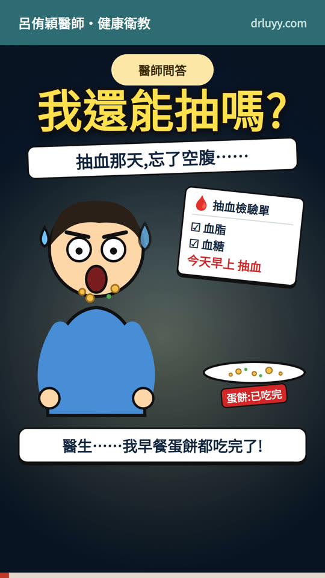

Latest Updates
最新更新文章

▶ 短影音 1:31醫師,驗血為什麼要空腹?驗膽固醇可以吃東西嗎?
單純驗血脂,大多數人不用空腹:吃一頓正常的飯,三酸甘油酯平均最多約增加 26,壞膽固醇平均最多約下降 8。真正一定要空腹至少 8 小時的是空腹血糖;糖化血色素不用空腹。非空腹三酸甘油酯 400 以上、已知高三酸甘油酯或家族有血脂異常,還是建議空腹。台灣成人健檢同時驗空腹血糖,要空腹至少 8 小時,請照檢查單指示;可以喝白開水,平常的藥不要自己停,用胰島素的人先問醫師。
 ▶ 短影音 1:33
▶ 短影音 1:33醫生,怎麼知道我有高血壓?要怎麼降下來?
一次量到高不等於高血壓。台灣指引用「722」在家量:連續 7 天、早晚各一次、每次量 2 遍,平均收縮壓 130 以上或舒張壓 80 以上就是高血壓。降壓先從 S-ABCDE 生活型態開始,得舒飲食約降 10–12、少吃加工食品最重要;很多人需要兩種以上的藥,單顆複方藥讓吃藥更簡單。目標通常是居家血壓低於 130/80,有副作用不要自己停藥;血壓很高又有胸痛、說話不清楚等警訊,立刻打 119。